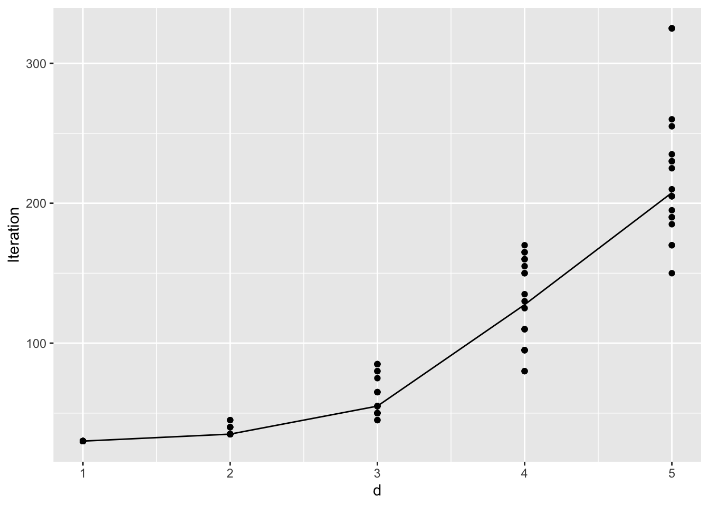

Last updated: 2025-06-27
Checks: 7 0
Knit directory: BOSS_website/
This reproducible R Markdown analysis was created with workflowr (version 1.7.1). The Checks tab describes the reproducibility checks that were applied when the results were created. The Past versions tab lists the development history.
Great! Since the R Markdown file has been committed to the Git repository, you know the exact version of the code that produced these results.
Great job! The global environment was empty. Objects defined in the global environment can affect the analysis in your R Markdown file in unknown ways. For reproduciblity it’s best to always run the code in an empty environment.
The command set.seed(20250415) was run prior to running
the code in the R Markdown file. Setting a seed ensures that any results
that rely on randomness, e.g. subsampling or permutations, are
reproducible.
Great job! Recording the operating system, R version, and package versions is critical for reproducibility.
Nice! There were no cached chunks for this analysis, so you can be confident that you successfully produced the results during this run.
Great job! Using relative paths to the files within your workflowr project makes it easier to run your code on other machines.
Great! You are using Git for version control. Tracking code development and connecting the code version to the results is critical for reproducibility.
The results in this page were generated with repository version d84944a. See the Past versions tab to see a history of the changes made to the R Markdown and HTML files.
Note that you need to be careful to ensure that all relevant files for
the analysis have been committed to Git prior to generating the results
(you can use wflow_publish or
wflow_git_commit). workflowr only checks the R Markdown
file, but you know if there are other scripts or data files that it
depends on. Below is the status of the Git repository when the results
were generated:
Ignored files:
Ignored: .DS_Store
Ignored: .Rhistory
Ignored: .Rproj.user/
Ignored: analysis/.DS_Store
Ignored: data/.DS_Store
Ignored: data/dimension/
Ignored: data/sim3/
Ignored: output/.DS_Store
Untracked files:
Untracked: output/dimension/dimension_test_wall_time.rda
Note that any generated files, e.g. HTML, png, CSS, etc., are not included in this status report because it is ok for generated content to have uncommitted changes.
These are the previous versions of the repository in which changes were
made to the R Markdown (analysis/dimension.Rmd) and HTML
(docs/dimension.html) files. If you’ve configured a remote
Git repository (see ?wflow_git_remote), click on the
hyperlinks in the table below to view the files as they were in that
past version.
| File | Version | Author | Date | Message |
|---|---|---|---|---|
| Rmd | d84944a | david.li | 2025-06-27 | wflow_publish("analysis/dimension.Rmd") |
| html | 814c9f9 | Ziang Zhang | 2025-05-01 | Build site. |
| Rmd | b94f357 | Ziang Zhang | 2025-05-01 | workflowr::wflow_publish("analysis/dimension.Rmd") |
| html | dc7eac1 | Ziang Zhang | 2025-05-01 | Build site. |
| Rmd | 2cf333b | Ziang Zhang | 2025-05-01 | workflowr::wflow_publish("analysis/dimension.Rmd") |
| html | d9702bf | david.li | 2025-04-30 | Build site. |
| Rmd | 62716cd | david.li | 2025-04-30 | wflow_publish("analysis/dimension.Rmd") |
| html | dea74cd | david.li | 2025-04-30 | Build site. |
| Rmd | d26910d | david.li | 2025-04-30 | wflow_publish("analysis/dimension.Rmd") |
| html | d62d9ab | david.li | 2025-04-30 | Build site. |
| Rmd | 0a285a3 | david.li | 2025-04-30 | wflow_publish("analysis/dimension.Rmd") |
| html | 4e91b5a | david.li | 2025-04-30 | Build site. |
| Rmd | 13edcf7 | david.li | 2025-04-30 | wflow_publish("analysis/dimension.Rmd") |
| html | 37dfc1f | david.li | 2025-04-30 | Build site. |
| Rmd | 28db27f | david.li | 2025-04-30 | Update dimension analysis. |
| html | 28db27f | david.li | 2025-04-30 | Update dimension analysis. |
In this example, we analyze how the convergence performance of BOSS changes with the dimension of the conditioning parameter \(\boldsymbol{\alpha}\), as well as the choice of the hyperparameter \(\delta\).
For simplicity, we set the objective posterior of the conditioning parameter as \(d\)-dimensional multivariate Gaussian for \(d = \{1, 2, 3, 4, 5\}\) with mean vector \(\mu_d = \mathbf{0}\) and randomly generated covariance matrices \(\Sigma_d\).
library(tidyverse)
library(tikzDevice)
function_path <- "./code"
output_path <- "./output/dimension"
data_path <- "./data/dimension"
source(paste0(function_path, "/00_BOSS.R"))# objective
eval_func <- function(x, d, Sigma){
return(mvtnorm::dmvnorm(x, mean = rep(0, d), sigma = Sigma, log = T))
}
d <- 1:5
sim_id <- 1:20
# pre-allocate result container
res_list <- vector("list", length(d))
res_time <- vector("list", length(d))
for (i in d){
res_list[[i]] <- vector("list", length(sim_id))
res_time[[i]] <- vector("list", length(sim_id))
}for (i in d) {
for (j in sim_id) {
success <- FALSE
attempt <- 0
while (!success) {
# each attempt: new seed -> new Sigma
seed_val <- j + attempt
set.seed(seed_val)
# regenerate A and Sigma
A <- matrix(rnorm(i^2), nrow = i)
Sigma <- crossprod(A)
# define objective with the new Sigma
obj_func <- function(x) eval_func(x, d = i, Sigma = Sigma)
lower <- rep(-4 * max(Sigma), i)
upper <- rep( 4 * max(Sigma), i)
# try BOSS on this Sigma
start <- Sys.time()
out <- try(
BOSS(obj_func,
criterion = "modal",
update_step = 5,
max_iter = 300,
D = i,
lower = lower,
upper = upper,
noise_var = 1e-6,
modal_iter_check = 5,
modal_check_warmup = 20,
modal_k.nn = 5,
modal_eps = 0.25,
initial_design = 5 * i,
delta = 0.01^i,
optim.n = 1,
optim.max.iter = 100),
silent = TRUE
)
end <- Sys.time()
time <- end - start
if (!inherits(out, "try-error")) {
# success: save and break out of retry loop
res_list[[i]][[j]] <- out
res_time[[i]][[j]] <- time
success <- TRUE
} else {
message(sprintf(
"BOSS failed for d=%d, sim=%d (attempt %d, seed=%d). Retrying with new Sigma…",
i, j, attempt, seed_val
))
attempt <- attempt + 1
}
}
}
}
save(res_list, file = paste0(output_path, "/dimension_test.rda"))
save(res_time, file = paste0(output_path, "/dimension_test_wall_time.rda"))load(paste0(output_path, "/dimension_test.rda"))
load(paste0(output_path, "/dimension_test_wall_time.rda"))
dim <- rep(d, each = 20)
iter <- unlist(lapply(res_list, function(x) lapply(x, function(y) max(y$modal_result$i)))) + 5*dim
wall_time_units <- unlist(lapply(res_time, function(sublist) lapply(sublist, units)))
wall_time <- unlist(lapply(res_time, as.numeric))
wall_time <- wall_time*(wall_time_units =='secs') + 60*wall_time*(wall_time_units =='mins')
iter.data <- data.frame(d= dim, Iteration = iter) %>%
group_by(d) %>%
mutate(med = median(Iteration))
wall_time.data <- data.frame(d= dim, time = wall_time) %>%
group_by(d) %>%
mutate(med = median(time))
ggplot(iter.data, aes(d, Iteration)) + geom_point() + geom_line(aes(d, med))
| Version | Author | Date |
|---|---|---|
| 28db27f | david.li | 2025-04-30 |
ggplot(wall_time.data, aes(d, time)) + geom_point() + geom_line(aes(d, med)) + ylab('Seconds')We can see pretty clearly that the number of iterations required for convergence roughly grows exponentially, which is consistent with the existing theoretical analysis of BO convergence.
In terms of the exact wall-clock time, we can see an even more drastic increase in the computational time as the dimension grows. This is because as larger dimension requires more iterations, it leads to additional computational cost in inferring the GP posterior. Since the actual evaluation of the objective function in this simulation example is negligible (evaluating the density of Gaussian), the computational time for GP posterior then eventually dominates as dimension and the iteration grows.
We also note that the above test only showcases the performance of BOSS when the true posterior is a multivariate Gaussian. We have observed that if there is deviation from normality, then convergence could take even longer, especially for higher dimension. For example, as the dimension increases, the conditioning parameters could very likely become close to degenerate, which makes the convergence of BOSS extremely difficult.
One important hyper-parameter that will also affect convergence is the UCB parameter \(\delta\). Previously when we explore the effect of increasing the dimension of \(\boldsymbol{\alpha}\), we have set \(\delta = 0.01^d\). That is, as the dimension increases, we adaptively decrease \(\delta\) as a function of \(d\). This strategy embodies the idea that as the dimension grows, it is exponentially more likely for there to be additional structure in the posterior distribution for BOSS to explore. As a result, it decreases \(\delta\) exponentially to force BOSS to spend more time exploring the entire parameter space.
When the posterior is close to uni-modal, the influence of \(\delta\) is typically small. In fact, forcing \(\delta\) to be too small may slow down BOSS from finding the posterior mode. We here check how would convergence behave if we instead fix \(\delta = 0.01\) under the previous multivariate Gaussian example.
# objective
eval_func <- function(x, d, Sigma){
return(mvtnorm::dmvnorm(x, mean = rep(0, d), sigma = Sigma, log = T))
}
d <- 1:5
sim_id <- 1:20
# pre-allocate result container
res_list <- vector("list", length(d))
for (i in d)
res_list[[i]] <- vector("list", length(sim_id))for (i in d) {
for (j in sim_id) {
success <- FALSE
attempt <- 0
while (!success) {
# each attempt: new seed -> new Sigma
seed_val <- j + attempt
set.seed(seed_val)
# regenerate A and Sigma
A <- matrix(rnorm(i^2), nrow = i)
Sigma <- crossprod(A)
# define objective with the new Sigma
obj_func <- function(x) eval_func(x, d = i, Sigma = Sigma)
lower <- rep(-4 * max(Sigma), i)
upper <- rep( 4 * max(Sigma), i)
# try BOSS on this Sigma
out <- try(
BOSS(obj_func,
criterion = "modal",
update_step = 5,
max_iter = 300,
D = i,
lower = lower,
upper = upper,
noise_var = 1e-6,
modal_iter_check = 5,
modal_check_warmup = 20,
modal_k.nn = 5,
modal_eps = 0.25,
initial_design = 5 * i,
delta = 0.01,
optim.n = 1,
optim.max.iter = 100),
silent = TRUE
)
if (!inherits(out, "try-error")) {
# success: save and break out of retry loop
res_list[[i]][[j]] <- out
success <- TRUE
} else {
message(sprintf(
"BOSS failed for d=%d, sim=%d (attempt %d, seed=%d). Retrying with new Sigma…",
i, j, attempt, seed_val
))
attempt <- attempt + 1
}
}
}
}
save(res_list, file = paste0(output_path, "/delta_test.rda"))load(paste0(output_path, "/delta_test.rda"))
dim <- rep(d, each = 20)
iter <- unlist(lapply(res_list, function(x) lapply(x, function(y) max(y$modal_result$i)))) + 5*dim
iter.data <- data.frame(d= dim, Iteration = iter) %>%
group_by(d) %>%
mutate(med = median(Iteration))
ggplot(iter.data, aes(d, Iteration)) + geom_point() + geom_line(aes(d, med))
Compare the above figure to the previous figure with adaptive \(\delta\), we see that the number of iterations until convergence decreases slightly. Although the exponential growth with respect to \(d\) is still clear.
sessionInfo()R version 4.4.1 (2024-06-14)
Platform: aarch64-apple-darwin20
Running under: macOS 15.0
Matrix products: default
BLAS: /Library/Frameworks/R.framework/Versions/4.4-arm64/Resources/lib/libRblas.0.dylib
LAPACK: /Library/Frameworks/R.framework/Versions/4.4-arm64/Resources/lib/libRlapack.dylib; LAPACK version 3.12.0
locale:
[1] en_US.UTF-8/en_US.UTF-8/en_US.UTF-8/C/en_US.UTF-8/en_US.UTF-8
time zone: America/Toronto
tzcode source: internal
attached base packages:
[1] stats graphics grDevices utils datasets methods base
other attached packages:
[1] tikzDevice_0.12.6 lubridate_1.9.3 forcats_1.0.0 stringr_1.5.1
[5] dplyr_1.1.4 purrr_1.0.2 readr_2.1.5 tidyr_1.3.1
[9] tibble_3.2.1 ggplot2_3.5.1 tidyverse_2.0.0 workflowr_1.7.1
loaded via a namespace (and not attached):
[1] sass_0.4.9 utf8_1.2.4 generics_0.1.3 stringi_1.8.4
[5] hms_1.1.3 digest_0.6.37 magrittr_2.0.3 timechange_0.3.0
[9] evaluate_1.0.0 grid_4.4.1 fastmap_1.2.0 filehash_2.4-6
[13] rprojroot_2.0.4 jsonlite_1.8.9 processx_3.8.4 whisker_0.4.1
[17] ps_1.8.0 promises_1.3.0 httr_1.4.7 fansi_1.0.6
[21] scales_1.3.0 jquerylib_0.1.4 cli_3.6.3 rlang_1.1.4
[25] munsell_0.5.1 withr_3.0.1 cachem_1.1.0 yaml_2.3.10
[29] tools_4.4.1 tzdb_0.4.0 colorspace_2.1-1 httpuv_1.6.15
[33] vctrs_0.6.5 R6_2.5.1 lifecycle_1.0.4 git2r_0.33.0
[37] fs_1.6.4 pkgconfig_2.0.3 callr_3.7.6 pillar_1.9.0
[41] bslib_0.8.0 later_1.3.2 gtable_0.3.5 glue_1.7.0
[45] Rcpp_1.0.13 highr_0.11 xfun_0.47 tidyselect_1.2.1
[49] rstudioapi_0.16.0 knitr_1.48 farver_2.1.2 htmltools_0.5.8.1
[53] labeling_0.4.3 rmarkdown_2.28 compiler_4.4.1 getPass_0.2-4